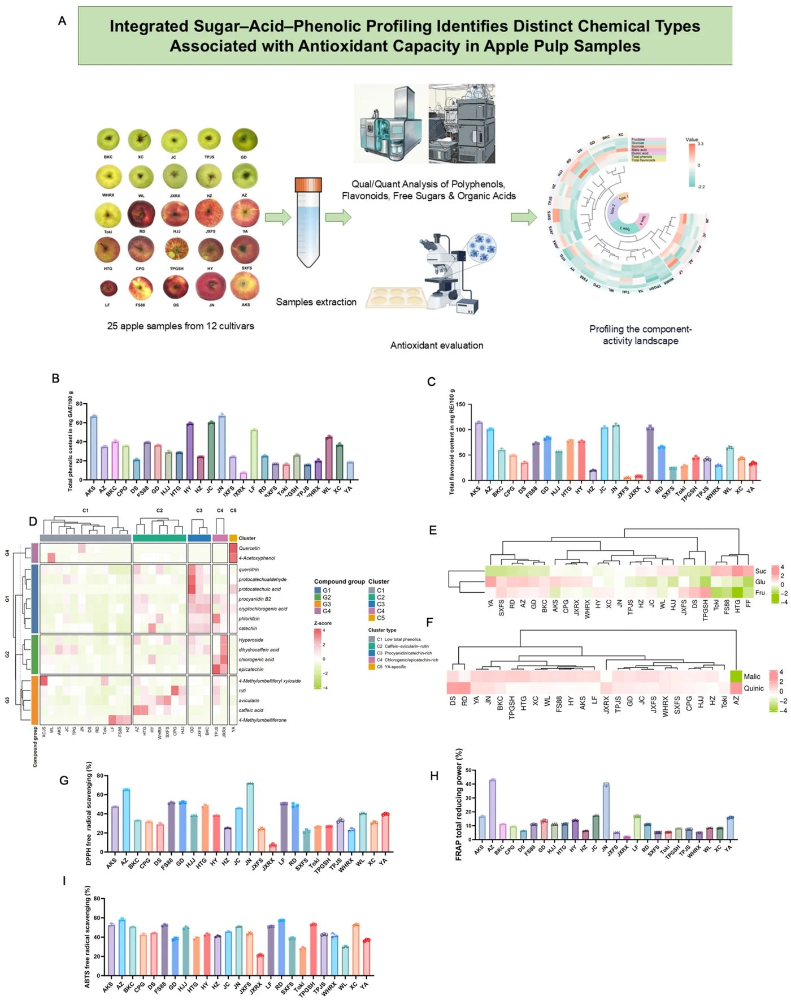
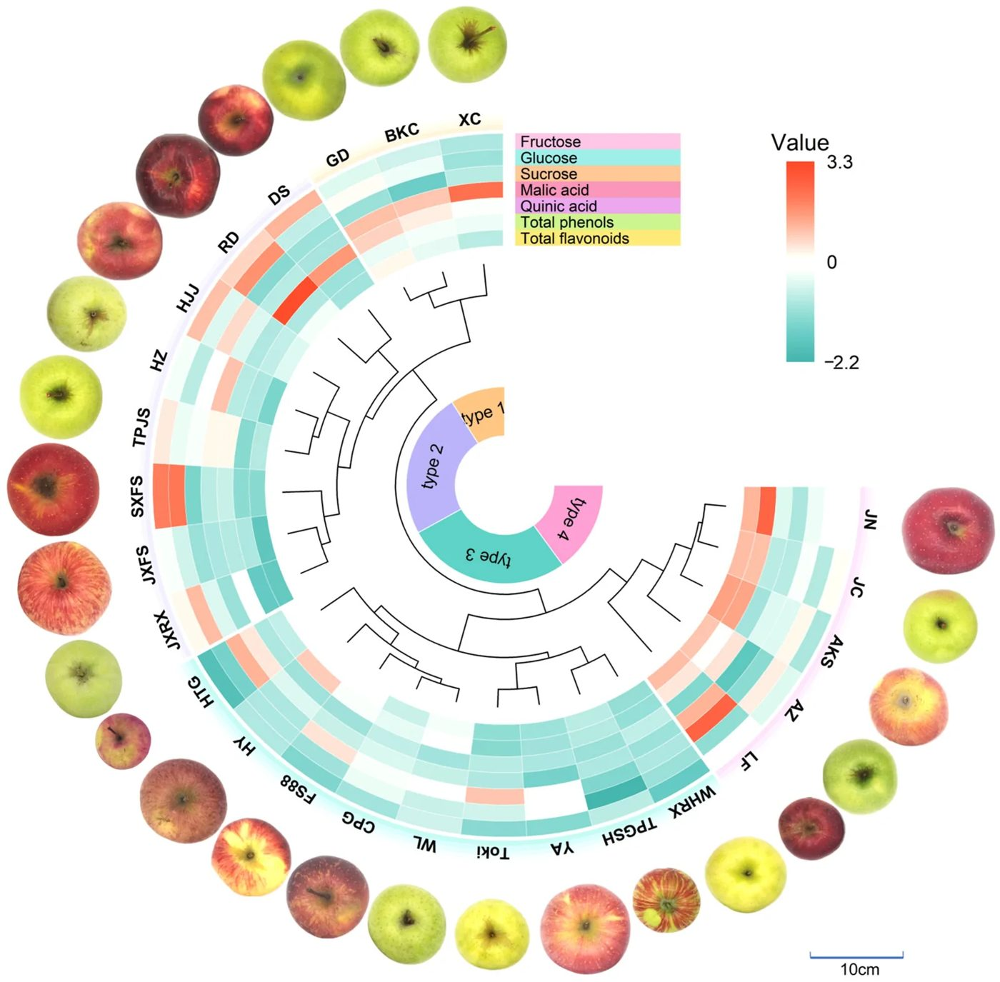
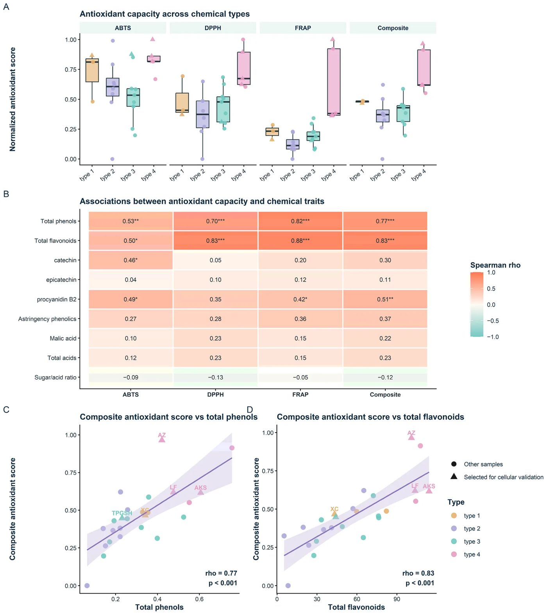
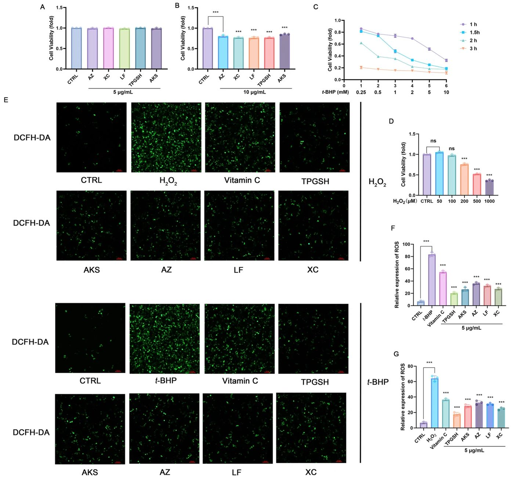
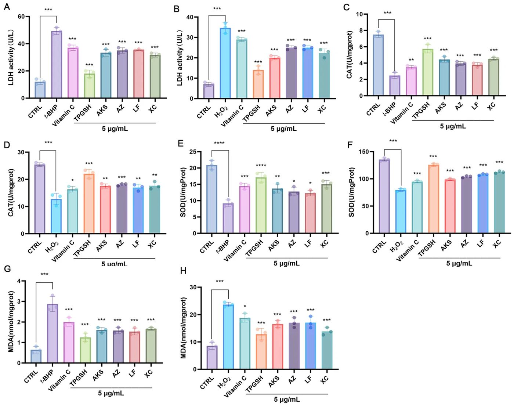

Сладкие яблоки уступают кислым по антиоксидантной защите


Полное описание рисунка
Химический состав и антиоксидантная активность in vitro 25 образцов мякоти яблок 12 сортов. (A) Исходные материалы и схема эксперимента. (B, C) Содержание общих фенолов и общих флавоноидов соответственно. (D) Тепловая карта 16 целевых фенольных и флавоноидных соединений. (E) Тепловая карта содержания фруктозы, глюкозы и сахарозы. (F) Тепловая карта содержания яблочной и хинной кислот. (G–I) Активность по поглощению радикалов DPPH, восстановительная способность FRAP и активность по поглощению радикалов ABTS соответственно. Химические показатели представлены как средние значения пяти биологических повторностей для каждого образца (n = 5), по одному плоду на каждую повторность. Погрешности соответствуют стандартным отклонениям. GAE — эквиваленты галловой кислоты; RE — эквиваленты рутина; FW — свежий вес.
Привычка оценивать качество яблок исключительно по сладости игнорирует их реальную антиоксидантную ценность. Анализ мякоти 25 образцов выявил четыре химических типа плодов, где доминируют фруктоза и яблочная кислота. Максимальную способность нейтрализовать свободные радикалы обеспечивают не сахара или кислоты, а полифенолы. На клеточных моделях экстракты богатых фенолами сортов снижали окислительный стресс сильнее всего.
Главное
- В мякоти яблок преобладают фруктоза и яблочная кислота, задающие баланс вкуса
- Сладкие сорта накапливают меньше фенолов и слабее связывают свободные радикалы
- Экстракт полифенолов в дозе 5 мкг/мл снижает окислительный стресс в клетках HepG2
Подробнее
Состав мякоти исследовали на 25 пробах от 12 коммерческих сортов яблок (Malus × domestica), отобранных по 5 биологических повторностей (n = 5). Свободные сахара (глюкозу, фруктозу, сахарозу) определяли методом сверхвысокоэффективной жидкостной хроматографии с детектором по светорассеянию (UPLC-ELSD), а органические кислоты (яблочную и хинную) и фенольные фракции — с помощью UPLC-PDA-MS. Основным сахаром оказалась фруктоза, а доминирующей органической кислотой — яблочная кислота (E296). Иерархический кластерный анализ по 7 химическим маркерам разделил выборку на четыре типа: кислотный, сахаро-доминантный с низким содержанием фенолов, промежуточный и фенольный.
Антиоксидантный потенциал измеряли методами ABTS, DPPH и FRAP, сопоставляя их со сводным индексом. Корреляционный анализ подтвердил, что вклад сахаров и кислот в связывание радикалов пренебрежимо мал по сравнению с флавоноидами и полифенолами. Защитные свойства подтвердили на культуре клеток гепатокарциномы человека HepG2: экстракты полифенолов в нетоксичной концентрации 5 мкг/мл существенно подавляли накопление активных форм кислорода (АФК), вызванное перекисью водорода (500 мкМ H2O2, 1 ч) и гидропероксидом трет-бутила (1 мМ t-BHP, 1,5 ч). Наивысшую защиту клеток продемонстрировал образец TPGSH с пиковым накоплением фенолов.
Ограничения
Исследование проводилось на коммерческих плодах без строгого контроля агротехники и сроков хранения, а клеточные тесты выполнены только на линии HepG2.
Полный перевод статьи
Резюме
Яблоня (Malus × domestica Borkh.) — одна из самых широко культивируемых и продаваемых плодовых культур в мире. По данным FAOSTAT, мировое производство яблок в 2023 году достигло примерно 97 млн тонн, при этом около половины общего объема приходится на Китай; Турция, США, Польша и Индия также являются крупными производителями. Международная торговля также значительна: Италия, Китай, США, Новая Зеландия и Чили входят в число ведущих мировых экспортеров свежих яблок по стоимости экспорта в 2023 году.
Пищевая и функциональная ценность яблочной мякоти тесно связана с её химическим составом. Растворимые сахара и органические кислоты являются важными первичными метаболитами, тогда как фенольные соединения, включая флаван-3-олы, процианидины, фенольные кислоты и флавонолы, — важными вторичными метаболитами, связанными с антиоксидантным потенциалом. Предыдущие исследования изучали сахара, органические кислоты, фенольные соединения или антиоксидантную активность яблок по отдельности. Однако остается неясным, как различные химические компоненты, особенно первичные метаболиты (сахара и органические кислоты) и вторичные метаболиты (фенольные соединения), влияют на вариативность функциональных свойств яблочной мякоти. Взаимосвязи между отдельными химическими классами и антиоксидантной активностью невозможно адекватно разрешить путем анализа только одной группы соединений или одного метода оценки антиоксидантной активности.
Важно
Исследование объединило химическое профилирование, антиоксидантные тесты и клеточные модели для оценки 25 образцов мякоти яблок 12 сортов.
Более того, бесклеточные методы, такие как ABTS, DPPH и FRAP, отражают различные механизмы химических реакций и не учитывают в полной мере клеточное поглощение, метаболизм или эндогенные антиоксидантные ответы. Поэтому для выяснения связи между составом мякоти яблок и антиоксидантным потенциалом необходим комплексный анализ. В данном исследовании проанализировано 25 образцов мякоти яблок 12 сортов из Китая и других стран. Были количественно определены свободные сахара, органические кислоты, общие фенолы, общие флавоноиды и репрезентативные фенольные и флавоноидные соединения, а дополнительные фенольные соединения были аннотированы с помощью нецелевой масс-спектрометрии. Семь химических признаков использовались для классификации, а полученные типы оценивались в связи с антиоксидантной емкостью (ABTS, DPPH, FRAP). Кроме того, полифенольные экстракты пяти образцов были протестированы в моделях окислительного стресса, индуцированного H2O2 и t-BHP в клетках HepG2.
Осторожно
Наблюдательное исследование: выявленные связи являются статистическими корреляциями, а не доказанной причинно-следственной связью. Использованы клеточные модели (in vitro), которые не полностью воспроизводят процессы в организме человека.
Двадцать пять образцов мякоти яблок 12 сортов были собраны в основных регионах производства Китая (Сычуань, Шэньси, Шаньси, Ганьсу, Цзилинь, Шаньдун, Синьцзян и Юньнань), а также из Австралии, США и Новой Зеландии (Таблица S1). Отбор проводился согласно Национальному стандарту Китая для свежих яблок. Для каждого образца случайным образом отбиралось 100 коммерчески зрелых плодов «высшего класса» без видимых повреждений. Фрукты транспортировались при 0 ± 0,5 °C и доставлялись в лабораторию в течение 48 ч. Для каждого образца 100 плодов были разделены на пять групп по 20 плодов. Из каждой группы случайным образом выбирался один плод для независимого анализа (n = 5 биологических повторностей). Мякоть гомогенизировали и хранили при −80 °C.
Для анализа сахаров и кислот 5 г мякоти гомогенизировали с 10 мл деионизированной воды с 0,01% аскорбиновой кислоты. Для анализа сахаров супернатант смешивали с ацетонитрилом. Для анализа кислот супернатант фильтровали через мембрану 0,22 мкм. Для экстракции фенолов и флавоноидов 10 г мякоти экстрагировали 30 мл 70% этанола с помощью ультразвука (40 кГц, 40 °C, 30 мин). Экстракцию повторяли дважды, супернатанты концентрировали и восстанавливали в 10 мл 70% метанола.
Пояснение
Ультразвуковая экстракция — метод извлечения веществ из растительного сырья с помощью звуковых волн высокой частоты, что ускоряет процесс и повышает выход соединений.
Содержание определяли с помощью коммерческих наборов: общие фенолы — по реакции Фолина-Чокальтеу, общие флавоноиды — по комплексообразованию с хлоридом алюминия. Результаты выражали в мг эквивалентов галловой кислоты (мг GAE/100 г) и мг эквивалентов рутина (мг RE/100 г) на свежий вес (FW).
Профилирование проводилось на системе ExionLC AD с масс-спектрометром X500R QTOF (SCIEX, США) в режиме отрицательных ионов. Аннотирование проводилось путем сравнения масс и спектров фрагментации с базами данных (MS-DIAL). Кандидаты с совпадением >80% классифицировались как MSI Level 2.
Сахара анализировали методом UPLC-ELSD на колонке ACQUITY UPLC BEH Amide. Органические кислоты — методом UPLC-PDA-MS на колонке Atlantis Premier BEH C18 AX. Относительная сладость рассчитывалась по формуле: Сладость = фруктоза × 1,7 + глюкоза × 0,7 + сахароза × 1,0.
Анализ проводился методом UPLC-PDA-MS на колонке Cortecs Premier T3. Было количественно определено 16 репрезентативных соединений с использованием аутентичных стандартов.
Использовались наборы для оценки активности ABTS, DPPH и FRAP. Результаты нормализовались, и рассчитывался композитный антиоксидантный балл как среднее значение нормализованных показателей.
Клетки HepG2 культивировались в среде DMEM с 10% FBS. Цитотоксичность экстрактов оценивалась тестом CCK-8. Концентрация 5 мкг/мл была выбрана для дальнейших экспериментов, так как не снижала жизнеспособность клеток.
Окислительный стресс индуцировали 500 мкМ H2O2 (1 ч) или 1 мМ t-BHP (1,5 ч). Внутриклеточные АФК (ROS) определяли с помощью зонда DCFH-DA. Также измеряли выброс ЛДГ (LDH), содержание МДА (MDA) и активность ферментов СОД (SOD) и КАТ (CAT).
Семь химических признаков (фруктоза, глюкоза, сахароза, яблочная кислота, хинная кислота, общие фенолы, общие флавоноиды) были стандартизированы (Z-score) и подвергнуты иерархической кластеризации (Ward.D2). Рассчитывались коэффициенты ранговой корреляции Спирмена.
Данные представлены как среднее ± стандартное отклонение (n=5). Использовались R (версия 4.5.2) и GraphPad Prism (версия 9.0.0). Статистическая значимость при p < 0,05.
Наблюдались значительные различия между 25 образцами. Общее содержание фенолов варьировалось от 6,40 до 75,50 мг GAE/100 г FW (максимум у JN, минимум у JXRX). Общие флавоноиды — от 5,32 до 114,07 мг RE/100 г FW (максимум у AKS, минимум у JXFS). Фруктоза была преобладающим сахаром (5,02–13,70 г/100 г FW), яблочная кислота — основной кислотой (0,129–4,567 г/100 г FW).
Образцы были разделены на четыре типа: Тип 1 (высокое содержание кислот), Тип 2 (высокие сахара, низкие фенолы), Тип 3 (промежуточные значения), Тип 4 (высокие фенолы и флавоноиды).
Тип 4 показал наивысшие антиоксидантные показатели. Антиоксидантная емкость положительно коррелировала с общими фенолами (ρ = 0,77) и флавоноидами (ρ = 0,83). Связь с сахарами и кислотами была слабой и статистически незначимой.
Для клеточных тестов выбраны AZ, XC, LF, TPGSH и AKS. Концентрация 5 мкг/мл не вызывала цитотоксичности.
Условия 500 мкМ H2O2 (1 ч) и 1 мМ t-BHP (1,5 ч) вызывали ~50% гибель клеток, что было принято за модель стресса.
Экстракты снижали накопление АФК и уменьшали повреждения клеток. Экстракт TPGSH показал наиболее выраженный защитный эффект, что может быть связано с высоким содержанием эпикатехина.
Исследование показало, что антиоксидантный потенциал яблочной мякоти сильнее связан с содержанием фенолов, чем с сахарами или кислотами. Клеточные эксперименты подтвердили защитный эффект экстрактов. Ограничения исследования включают невозможность полной стандартизации условий выращивания и хранения образцов, а также использование клеточной модели in vitro.
Антиоксидантная активность яблочной мякоти определяется преимущественно фенольным составом. Интегрированный химико-антиоксидантный подход позволяет классифицировать образцы яблок по их функциональным свойствам. Необходимы дальнейшие исследования биодоступности и метаболизма in vivo.
Полное описание рисунка
Химический состав и антиоксидантная активность in vitro 25 образцов мякоти яблок 12 сортов. (A) Исходные материалы и схема эксперимента. (B, C) Содержание общих фенолов и общих флавоноидов соответственно. (D) Тепловая карта 16 целевых фенольных и флавоноидных соединений. (E) Тепловая карта содержания фруктозы, глюкозы и сахарозы. (F) Тепловая карта содержания яблочной и хинной кислот. (G–I) Активность по поглощению радикалов DPPH, восстановительная способность FRAP и активность по поглощению радикалов ABTS соответственно. Химические показатели представлены как средние значения пяти биологических повторностей для каждого образца (n = 5), по одному плоду на каждую повторность. Погрешности соответствуют стандартным отклонениям. GAE — эквиваленты галловой кислоты; RE — эквиваленты рутина; FW — свежий вес.


Полное описание рисунка
Круговая иерархическая кластерная тепловая карта семи недублирующихся химических признаков в 25 образцах мякоти яблок 12 сортов. Тепловая карта построена на основе средних значений содержания фруктозы, глюкозы, сахарозы, яблочной кислоты, хинной кислоты, общих фенолов и общих флавоноидов, полученных из пяти биологических повторностей. Данные для каждого признака стандартизированы по Z-оценке по всем образцам: оранжевый цвет указывает на значения выше среднего, белый — близкие к среднему, бирюзовый — ниже среднего. Иерархическая кластеризация выполнена с использованием евклидова расстояния и метода связи Ward.D2, дендрограмма разделена на четыре химических типа на уровне образцов. Внутренние цветные секторы и внешние заштрихованные полосы указывают на соответствующее распределение по типам. Номера типов являются произвольными идентификаторами кластеров и не отражают ранжирование качества образцов. Фотографии целых плодов расположены вокруг тепловой карты в соответствующем порядке для морфологической справки, при этом все химические измерения проводились с использованием мякоти яблок. Сокращения образцов и подробная информация о происхождении приведены в Таблице S1.


Полное описание рисунка
Антиоксидантная способность и её связь с химическими признаками в 25 образцах мякоти яблок 12 сортов. (A) Нормализованные показатели ABTS, DPPH, FRAP и совокупный антиоксидантный балл для четырех химических типов. Совокупный балл рассчитан как среднее арифметическое нормализованных значений ABTS, DPPH и FRAP. Ящики представляют межквартильный размах, горизонтальные линии — медианы, «усы» — 1,5 межквартильного размаха, точки — отдельные образцы. (B) Корреляция Спирмена между антиоксидантными индексами и выбранными химическими признаками. Числа обозначают коэффициент корреляции Спирмена; , и обозначают p < 0,05, p < 0,01 и p < 0,001 соответственно. (C, D) Связь совокупного антиоксидантного балла с содержанием общих фенолов (C) и общих флавоноидов (D). Линии показывают результаты линейной регрессии, заштрихованные области — 95% доверительные интервалы. Цвета обозначают химические типы; треугольники — пять образцов, отобранных для клеточной валидации, кружки — остальные образцы.


Полное описание рисунка
Оценка цитотоксичности и создание моделей окислительного стресса в клетках HepG2. (A, B) Влияние экстрактов полифенолов мякоти яблок в концентрации 5 и 10 мкг/мл соответственно на жизнеспособность клеток. (C) Влияние концентрации t-BHP и длительности воздействия на жизнеспособность клеток. (D) Влияние концентрации H2O2 после 1 часа воздействия. (E) Представительные флуоресцентные изображения DCFH-DA внутриклеточных АФК при окислительном стрессе, вызванном H2O2 и t-BHP, после предварительной обработки витамином C или экстрактами полифенолов яблок. (F, G) Количественная оценка флуоресценции АФК в моделях H2O2 и t-BHP соответственно. Данные представлены как среднее ± стандартное отклонение (n = 3). *** p < 0,001 по сравнению с контрольной группой (Model).


Полное описание рисунка
Влияние экстрактов полифенолов мякоти яблок на окислительное повреждение и антиоксидантную защиту в клетках HepG2. Высвобождение ЛДГ (A, B), активность КАТ (C, D), активность СОД (E, F) и содержание МДА (G, H) определялись в условиях окислительного стресса, вызванного H2O2 (A, C, E, G) и t-BHP (B, D, F, H). Клетки были предварительно обработаны витамином C или экстрактами полифенолов из пяти отобранных образцов мякоти яблок. Данные представлены как среднее ± стандартное отклонение (n = 3). * p < 0,05, p < 0,01, * p < 0,001 по сравнению с контрольной группой (Model).
Схема исследования
Статья опубликована в рецензируемом журнале Foods (Basel, Switzerland). Но и опубликованный результат — одно исследование, а не окончательный вывод.
Источник
| Источник | Категория | Лицензия |
|---|---|---|
| Foods (Basel, Switzerland) (Europe PMC) | antioxidants_add | CC BY 4.0 |
Источники
| Источник | Ссылка |
|---|---|
| Страница статьи | europepmc.org |
| Полный текст (PDF) | europepmc.org |
| DOI | doi.org |
| Метаданные Crossref | api.crossref.org |
| Europe PMC | europepmc.org |
| Иллюстрация | commons.wikimedia.org_interior.jpg) |